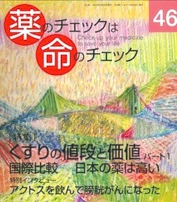

No.46 [特集] くすりの値段と価値パート１ 国際比較―日本の薬は高い 2012年4月 発行
医療費が増えるばかりだ、
薬剤費が減らない、
と国はいいます。
ジェネリック薬をもっと使いましょう、
と国はいいます。
でも、まてよ。
国は本気で減らそうとしているのだろうか？
すぐに病名をつけて薬が出るじゃぁないか！
薬の値段はどうやって決まるのだろう？
外国よりも高いのだろうか、安いのだろうか？
薬の値段と価値とはつりあっているのだろうか？
私たちは必要不可欠な薬を処方されているのだろうか？
医薬分業は薬の値段と価値にどう関係するのだろう、
そして、それは患者のためになっているのだろうか？
一緒にいろいろ考えましょう。
もくじ
Main Feature 特集 くすりの値段と価値 PART1
国際比較――日本の薬は高い
■ 私たちはくすりにお金をかけすぎている 浜六郎
■ 薬の売り上げ上位３０を総点検しよう
■ ２０１０年売上ベスト30のリスト
■ 製薬企業はもうけすぎている 浜六郎
■ 薬害を生む構造概念図
■ 見える薬剤師、ものがいえる薬剤師を目指して 戸井千紘
Topics トピック
■ インフルエンザ集団接種が高齢者の死亡を減らすって、ほんとう？ 浜六郎／編集部
■ アリスキレンの臨床試験が中止された理由
Second Feature
■ 「私は真相を知りたい。アクトスでいったい何人ががんになっているのか」
森崎克朗さんに聞く（聞き手：隈本邦彦）
Series 連載
■ 医師国家試験に挑戦しよう！⑫ 木元康介
■ コーヒー無礼区 坂口啓子
■ リレーエッセイ 私が古本屋になるまで 坂上友紀
■ 海外情報
①前立腺がんPSA検診の最近の話題
②フランスの医薬品行政を大きく変革しつつある「メディアトール薬害」
③ノバルティスに抗議しよう
■ 新・市民の視点 輸出立国日本 江南和幸
■ みんなのやさしい生命倫理(46) 生老病死⑯ 谷田憲俊
■ 行ってきました ハンセン病問題の啓発をめぐる課題 宮前千雅子
■ 医師国家試験の解答と解説
Others
■ 次号予告
■ 質問箱①【糖尿病特集】糖尿病にアルコールは有害では？・・・など
②生命倫理なのに、なぜ容姿の話なのですか？・・・など
■ 読者の声
■ 書評
■ バックナンバー一覧 / 書籍申込用紙
■ 編集後記/奥付
■ 医薬ビジランスゼミ開講！